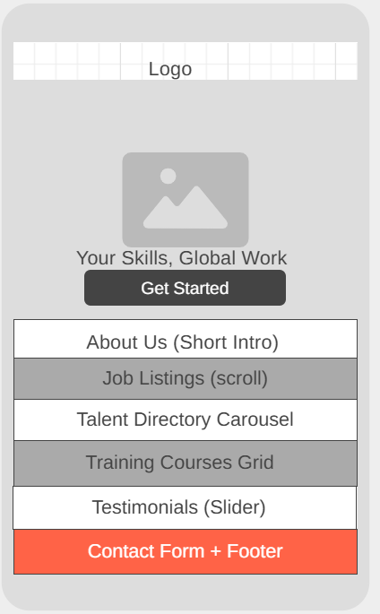

Site Purpose
The purpose of Skills2Work is to connect skilled individuals from underrepresented regions with curated international remote job opportunities. The platform features a job board, talent directory, upskilling courses, and success stories to guide users on their career journey.
Target User Scenarios
- Where can I find remote jobs that match my skillset?
- How do I prepare for interviews with international clients?
- How do I find the best and reliable remote employees?
Color Scheme
- Primary Blue (#005A9C): Used for headings and navigation links.
- Accent Orange (#FF6B00): Used for call-to-action buttons.
- Background Gray (#F2F2F2): Used for content background.
- White (#FBFBFB): Used for text and clean areas.

Typography
- Montserrat: Used for headings and titles to give a bold, modern look.
- Open Sans: Used for body content for clear readability.
Wireframe
Mobile
Large Screen